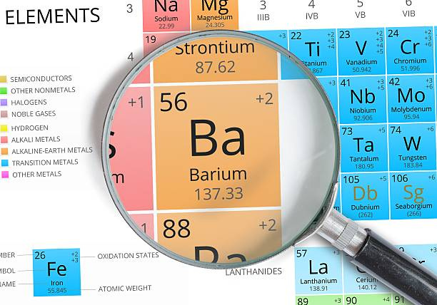
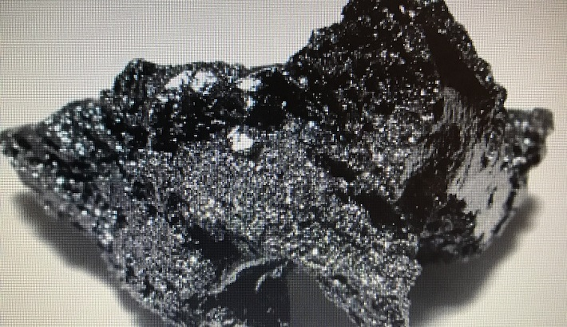

Барий
Ба́рий (химический символ — Ba, от лат. Barium) — химический элемент 2-й группы (по устаревшей классификации — главной подгруппы второй группы, IIA) шестого периода периодической системы химических элементов Д. И. Менделеева с атомным номером 56.Простое вещество барий — мягкий, вязкий, ковкий щёлочноземельный металл серебристо-белого цвета. Обладает высокой химической активностью.

Барий в виде оксида открыл в 1774 г. К. Шееле, который обнаружил неизвестную ранее «землю», позже названную «тяжёлой землёй» – баритом (от греч. βαρύς – тяжёлый). В 1808 г. Г. Дэви получил металлический барий в виде амальгамы электролизом расплавленных солей.

Содержание бария в земной коре составляет 5·10–2 % по массе. Вследствие высокой химической активности в свободном виде не встречается. Основные минералы: барит BaSO4 и витерит BaCO3. Мировое производство BaSO4 около 8,2 млн т/год (2020).

Основное сырьё для производства бария – баритовый концентрат (80–95 %) BaSO4, который восстанавливают каменным углем, коксом или природным горючим газом; образующийся сульфид бария перерабатывают в другие соли этого элемента. Прокаливанием соединений бария получают BaO. Технически чистый металлический барий (96–98 % по массе) получают термическим восстановлением оксида BaO порошком Al. Перегонкой в вакууме барий очищают до содержания примесей менее 10–4 %, зонной плавкой – до 10–6 %. Другой способ получения бария из BaO – электролиз расплава оксида. Небольшие количества бария получают восстановлением бериллата BaBeO2 при 1300 °С титаном.Барий используют как раскислитель меди и свинца, в качестве присадки к антифрикционным сплавам, чёрным и цветным металлам, а также к сплавам, применяемым для изготовления типографских шрифтов с целью увеличения их твёрдости. Из сплавов бария с никелем изготовляют электроды запальных свечей в двигателях внутреннего сгорания и в радиолампах. Сплав бария с алюминием – альба, содержащий 56 % Ba, основа геттеров. Металлический барий – материал для анодов в химических источниках тока. Активной частью большинства термоэмиссионных катодов является оксид бария. Пеpоксид бария используют в качестве окислителя, отбеливателя, в пиротехнике; ранее его применяли для регенерации кислорода из CO2. Гексаферрит бария BaFe12O19 – перспективный материал для использования в устройствах хранения информации; BaFe12O19 применяют для изготовления постоянных магнитов. BaSO4 вводят в буровые растворы при добыче нефти и газа. Титанат бария BaTiO3 – один из важнейших сегнетоэлектриков. Нуклид 140Ba (β-излучатель, период полураспада T1/2 12,8 суток) – изотопный индикатор, используемый для исследования соединений бария. Поскольку соединения бария хорошо поглощают рентгеновское и γ-излучение, их вводят в состав защитных материалов рентгеновских установок и ядерных реакторов. BaSO4 применяют как контрастное вещество для рентгенологических исследований желудочно-кишечного тракта.